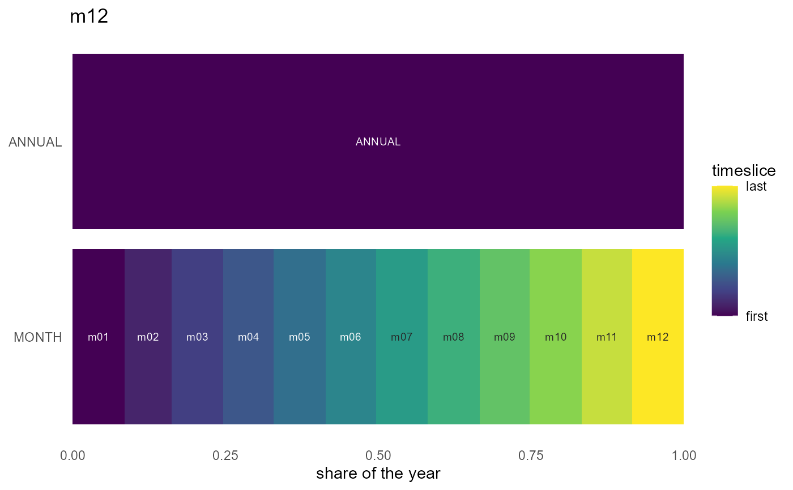

One horizontal band per timeframe (ANNUAL root on top, coarsest first),
rectangle widths proportional to timeslice shares, x spanning the covered
year on [0, 1]. autoplot() and plot() on a Calendar dispatch here.
Usage
calendar_autoplot(
object,
fill = c("order", "share", "weight"),
color_pattern = c("within", "global"),
labels = c("name", "timeslice", "none"),
max_labels = 60L,
max_segments = 2000L,
border = NA,
palette = "D",
annual = TRUE,
...
)
autoplot.Calendar(object, ...)
# S3 method for class 'Calendar'
plot(x, ...)Arguments
- object
A
Calendar.- fill
What drives the fill gradient:
"order"(chronological position, default),"share", or"weight".- color_pattern
For
fill = "order":"within"(default) restarts the gradient inside each parent timeslice (hours recycle every day);"global"sweeps once across the whole year.- labels
Segment labels:
"name"(level value, e.g.h00; default),"timeslice"(full path, e.g.Q1_h00), or"none".TRUE/FALSEare accepted as shorthands.- max_labels
Rows with more segments than this get no labels. Default 60.
- max_segments
Rows with more segments than this are binned by x-midpoint before drawing (fill = width-weighted mean), keeping hourly calendars fast. Default 2000.
- border
Rectangle border color. Default
NA(none), so dense rows render as smooth gradients.- palette
Viridis option letter or name (
"D"/"viridis","C"/"plasma","B","A","E","turbo"...). Default"D".- annual
Include the
ANNUALroot band. DefaultTRUE.- ...
Passed on to
calendar_autoplot().- x
Examples
if (requireNamespace("ggplot2", quietly = TRUE)) {
calendar_autoplot(calendar("q4_h24"))
ggplot2::autoplot(calendar("m12")) # same via the generic
}
